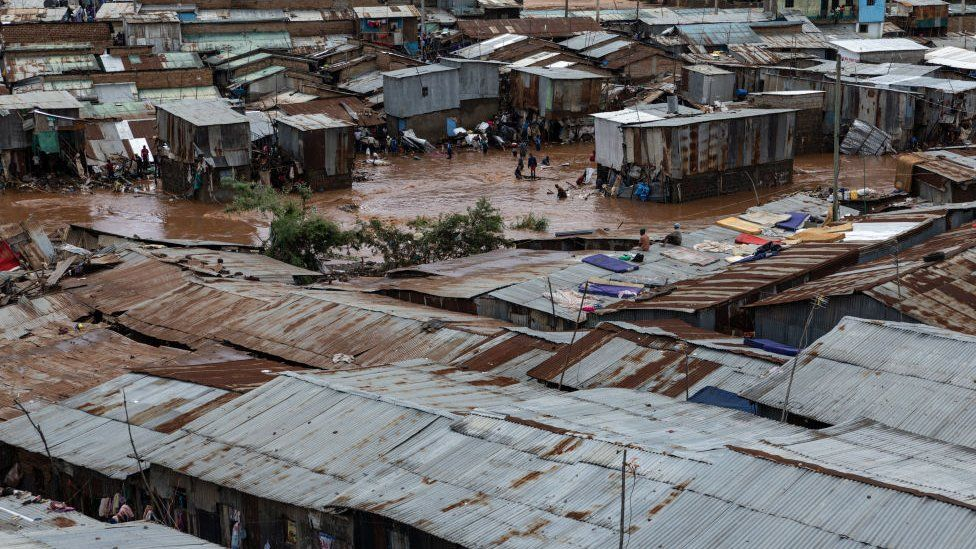

NAIROBI

LIVE
Road flooding blocks Mathare Primary
Voter drive opens in Kayole Saturday
Free food distribution at Mathare 4A tomorrow
Uhuru Park clean-up Sunday 7am
Water disruption South B — 6 days
Nairobi — Live Community Feed
YOUR CITY.
YOUR VOICE.
YOUR ACTION.
RADAA connects Nairobi residents to real‑time community activities — from road potholes to food drives, from polling stations to community clean‑ups.
4,280 Reports
12,840 Voters
880 Events
Scroll
Trending Now
Happening in Nairobi

IssueFlooded Road Blocks School Access — Mathare North Road
Children unable to reach Mathare Primary after 3 days of flooding. County roads department yet to respond to multiple calls from residents.
 Voting
Voting
Ward By-Election — Bring Your National ID
 Food Aid
Food Aid
Free Maize Flour & Oil Distribution — 500 Families
Event
City Clean-Up & Tree Planting — 500 Trees
 Health
Health
Free Cervical Cancer Screening — Women 25–65
 Issue
Issue
6 Days Without Water — South B Estate Emergency
0
Issues Reported
0
Votes Engaged
0
Events Joined
0
NGOs Active
Analytics
Civic Activity Overview
Issue Categories
Weekly Engagement
Participation by Area
What We Do
Four Civic Pillars
01
Voting Awareness
Upcoming elections, ward meetings, and civic education drives across Nairobi.
Explore
02
Issue Reporting
Report potholes, blackouts, water shortages and infrastructure problems directly.
Report Now
03
Food Aid
Connect with food banks, NGO relief efforts and community kitchens near you.
Find Aid
04
Social Impact
Tree planting, clean-ups, mentorship events and youth empowerment programs.
Get Involved